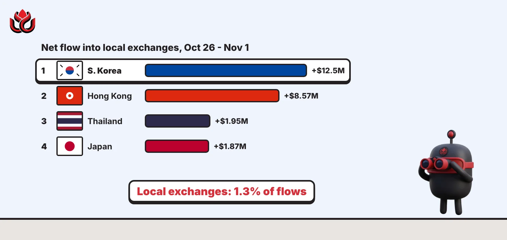
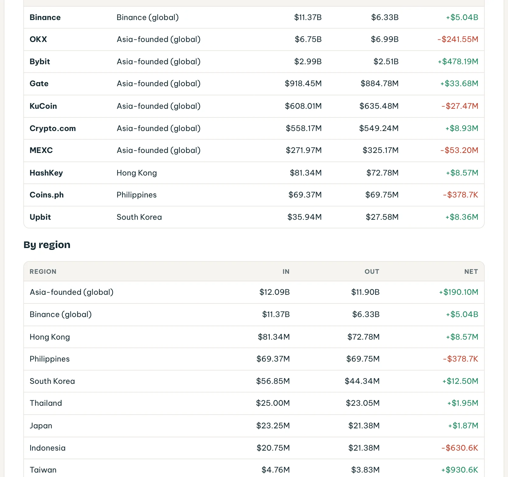
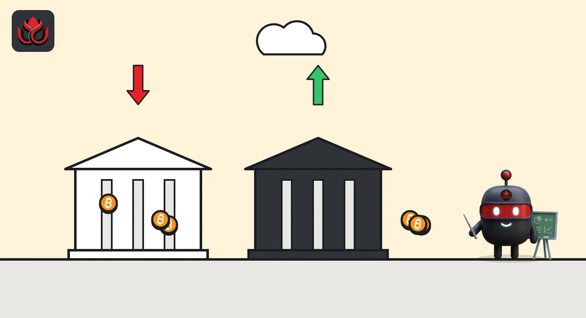

Asia's local exchanges handled just 1.3% of flows as Binance took in a net $5.04 billion
South Korea led the local markets with $12.5 million net in. Upbit, HashKey, Bitkub and other home-market exchanges together handled about $538 million of deposits and withdrawals from October 26 to November 1, DeepSea's data shows.

Key points
- From October 26 to November 1, exchanges serving single Asian markets handled about $538 million of tracked flows, roughly 1.3% of the $42.24 billion that moved through Asian exchanges, DeepSea shows.
- South Korea had the biggest local net inflow at +$12.50 million, with Upbit at +$8.36 million. Hong Kong's HashKey followed at +$8.57 million.
- Indonesia (minus $630,600) and the Philippines (minus $378,700) were the only local markets where more left than arrived.
 What DeepSea's data shows
What DeepSea's data shows
DeepSea's weekly report tracks deposits to and withdrawals from labeled exchange wallets for the week of October 26 to November 1, 2026. It splits Asian exchanges by region. Two groups are global: Binance (net +$5.04 billion) and other Asia-founded global exchanges such as OKX and Bybit (net +$190.10 million). The rest are local exchanges that mainly serve one country.
Net flow by local market: South Korea +$12.50 million ($56.85 million in, $44.34 million out), Hong Kong +$8.57 million, Thailand +$1.95 million, Japan +$1.87 million, Taiwan +$930,600, India +$636, Philippines minus $378,700 and Indonesia minus $630,600. DeepSea's Asian KOL report for the same week says these local venues handled only 1.3% of Asian exchange volume.

Data: DeepSea (desea.io), checked November 4, 2026, 6:40 a.m. ET.
Who moved what
In South Korea, Upbit took in $35.94 million and sent out $27.58 million, a net +$8.36 million. That leaves about $4.14 million of Korea's net inflow at other Korean exchanges DeepSea tracks; the report does not name them in its exchange table.
In Hong Kong, HashKey drew $81.34 million in and $72.78 million out (+$8.57 million) on just 443 deposits and 324 withdrawals. That works out to more than $180,000 per deposit on average, so HashKey handled fewer but larger transfers. Thailand's Bitkub ended at +$1.95 million on 4,434 deposits and 5,735 withdrawals.
Indonesia's Indodax logged 3,528 deposits but only 307 withdrawals, yet still ended slightly negative (minus $630,600), so its withdrawals were much larger on average. The Philippines' Coins.ph was almost flat at minus $378,700.
Net flow into local Asian exchanges, by market
US$ million
October 26 to November 1, 2026. Source: DeepSea weekly report.
Japan's two exchanges split on bitcoin
DeepSea's bitcoin table shows Japan's two tracked exchanges pulling in opposite directions. bitbank took in a net 101 BTC (155 in, 54 out), while Coincheck lost a net 80 BTC (113 in, 193 out). For scale, Binance took in a net 66,386 BTC in the same week.

Why it matters
Local exchanges are where many people in Korea, Japan and Southeast Asia buy crypto with their own currency. Their flows are small next to the global giants, so a few large transfers can swing them. DeepSea's numbers cover only the exchange wallets it has labeled and show direction, not who sent the money or why.
LC Insight analysis
This section is our reading of the facts above, not a statement of fact.
- We think the 1.3% figure is the real story: most Asian crypto money now moves through a handful of global exchanges, not home-market ones.
- South Korea and Hong Kong both took in money while Indonesia and the Philippines saw small net outflows. With amounts this small, one week is not a trend.
- HashKey's average deposit of more than $180,000 stands out among local venues. The data alone cannot say who the depositors were.
What's next
- Whether Korean exchange inflows keep growing next week
- HashKey's deposit sizes in the next DeepSea report
- bitbank and Coincheck bitcoin balances
Disclaimer. This article is based on public information and the sources listed below as of the update time shown. It is for information only and is not investment, legal or tax advice. Figures may change as companies and authorities publish new data.
Sources
- DeepSea, Weekly Smart Money & Global Money Flows Report, October 26 to November 1, 2026 (Asian exchange flows and Asian exchange flows by region, chain and token; read November 4, 2026, 6:40 a.m. ET)
- DeepSea, Asian KOL Weekly Report, October 26 to November 1, 2026 (Asian exchange flows; read November 4, 2026, 6:40 a.m. ET)